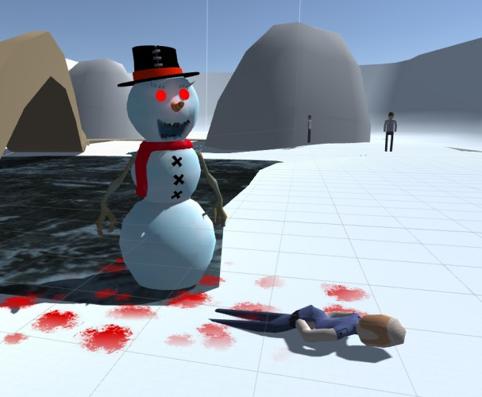

dead-silence-a-walk-in-the-park

Description
made by tinykidtoo for LD34 (COMPO)
Have you ever wondered what would happen if snowmen came to life. Well here is what I imagine so let yourself go crazy in this prototype killer game.
Source https://drive.google.com/file/d/0B1jG4k4U1BfLYVdWQXQ0UnVteGM/view?usp=sharing
Windows https://drive.google.com/file/d/0B1jG4k4U1BfLejdxTE4zNWlrd28/view?usp=sharing
OS/X https://drive.google.com/file/d/0B1jG4k4U1BfLYm5HSHMtMlRPR28/view?usp=sharing
Linux https://drive.google.com/file/d/0B1jG4k4U1BfLY2lEcUZST2paY0k/view?usp=sharing
Original URL https://ludumdare.com/compo/ludum-dare-34/?action=preview&uid=25245
Screenshots & Images

Play The Game
Feedback & Comments
Cyranh (14. Dec 2015 · 11:42 UTC): I like the gameplay and it works really well too. Game is fun to play, and I played it until I beat the game. Problem is that I don't really see what theme you went for here, because you neither grow or use two controls.
Louspirit (15. Dec 2015 · 21:30 UTC): Nice graphics and gameplay. Personaly I did not use the static form much. I disliked the moskito sound anyway.
DinnerInTheDark (20. Dec 2015 · 11:16 UTC): Cool in concept, but it feel unfinished. I don't seem how the theme fits in, it seems to be the theme from previous LD jam??
Jacob123 (21. Dec 2015 · 21:56 UTC): I liked how the people screamed. It was a very half-hearted scream and they died for it!
n8m8 (22. Dec 2015 · 14:01 UTC): Thanks for your game!
I played your game along with several others from this jam and 'reviewed' them here: https://n8r8.wordpress.com/2015/12/22/n8-r8s-8-ludum-dare-34-part-1/
Dreyan (27. Dec 2015 · 09:32 UTC): Not exactly sure how the theme fits in? And it was unclear to me what the point of the static position was, when I played around with it, it didn't seem to have much purpose. I did enjoy the "screams" of the civilians though, it was pretty amusing. (: